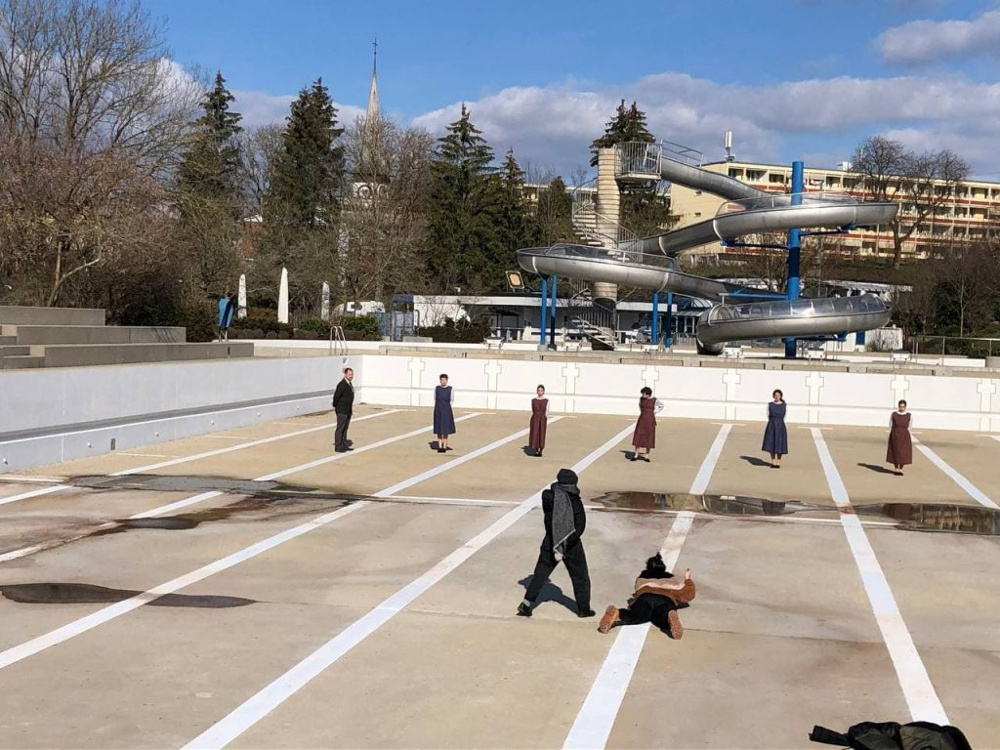

Posts
Erstes Kostümprojekt
Die Kostüme für die Oper «Giulio Cesare in Egitto» waren mein erstes Projekt auf der Bühne. Dabei habe ich zum ersten Mal gemerkt, wie viel spass es macht, sich in ein Stück zu vertiefen, sich in eine andere Zeit zu denken, sich zu überlegen mit welchem Detail man die beste Wirkung erziehlt.


Kostüme für «Hingubank»
Das Theaterkollektiv Edit hat mich beauftragt für ihre Produktion «Hingubank» die Kostüme zu entwerfen, gestalten und umzusetzten. Das Stück spielt im Frauengefängnis Hindelbank von den 60er bis in die 80er Jahre und behandelt das Thema der administrativ Versorgten. Die Aufführungen finden im Juni 2021 im Tojo und im Kulturhof Köniz statt. Auf dem Bild sieht man den Gefängnisdirektor und die Insasinnen in ihren Kostümen bei einem Fotoshooting in der Badi in Köniz. 